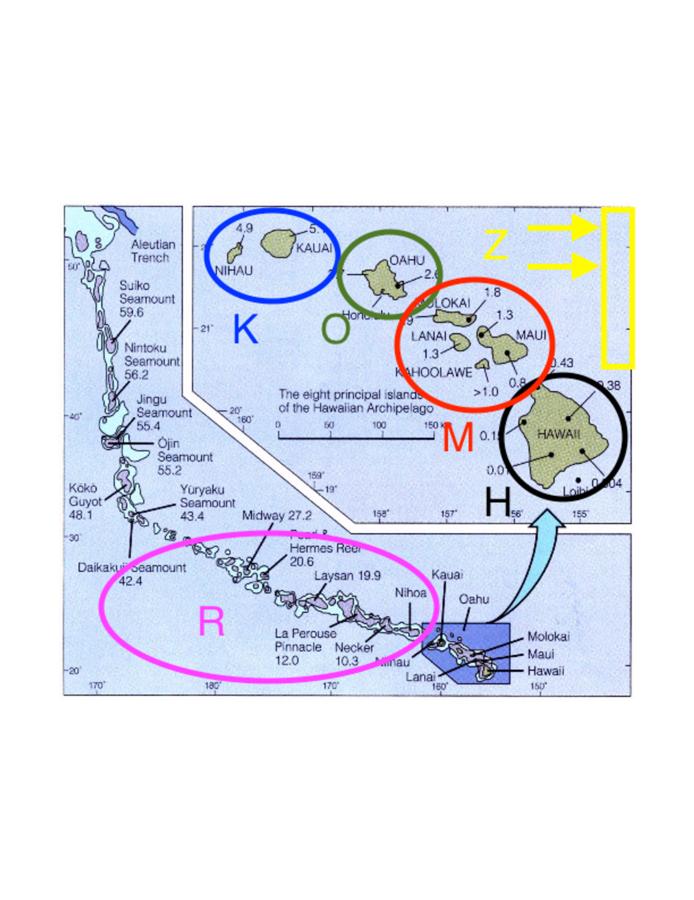
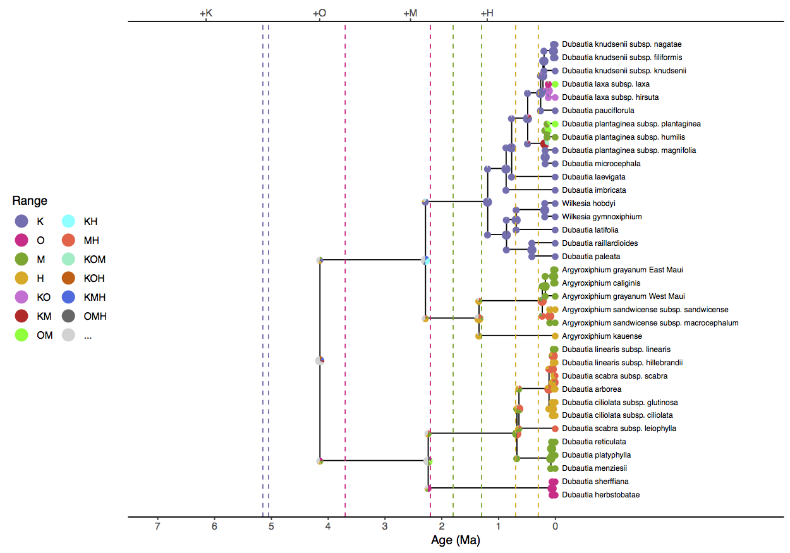

In the Introduction to Phylogenetic Models of Discrete Biogeography tutorial, we went through the exercise of setting up the instantaneous rate matrix and cladogenetic transition probabilities for a simple DEC model. In this tutorial, we will complete a biogeographic analysis using an empirical dataset: the Hawaiian silverswords.
The following series of tutorials will estimate the ancestral ranges of the silversword alliance (Tribe Madiinae), a young and diverse clade of about 50 species and subspecies. Although silverswords are endemic to Hawaii, they are nested within a larger clade alongside tarweeds, which are native to western continental North America (Baldwin et al. 1991). The size and age of the silversword clade, combined with our knowledge of Hawaiian island formation, makes it an ideal system to explore concepts in historical biogeography and phylogeny. For further reading, consult Carlquist (1959) and Baldwin and Sanderson (1998).

For this tutorial we’ll focus entirely on the silversword alliance and the modern Hawaiian archipelago. To begin, we’ll use just four areas, K, O, M, and H, and include areas R and Z in later analyses (). The species ranges used in this exercise follow Gillespie and Baldwin (2009).
| Range | Areas | Size | State |
|---|---|---|---|
| $\emptyset$ | 0000 | 0 | 0 |
| K | 1000 | 1 | 1 |
| O | 0100 | 1 | 2 |
| M | 0010 | 1 | 3 |
| H | 0001 | 1 | 4 |
| KO | 1100 | 2 | 5 |
| KM | 1010 | 2 | 6 |
| OM | 0110 | 2 | 7 |
| KH | 1001 | 2 | 8 |
| OH | 0101 | 2 | 9 |
| MH | 0011 | 2 | 10 |
| KOM | 1110 | 3 | 11 |
| KOH | 1101 | 3 | 12 |
| KMH | 1011 | 3 | 13 |
| OMH | 0111 | 3 | 14 |
| KOMH | 1111 | 4 | 15 |
We have provided the following data files for this tutorial:
Once you have downloaded the zip file by clicking on the arrow above, Unzip that and navigate inside of that directory. This directory should be called
revbayes_biogeo_biogeo_simpleOnce inside you should see two directories:
dataandscriptsOnce you have all of the files, open RevBayes and ensure that your working directory is the top directory above the
datafolder (e.g.,revbayes_biogeo_biogeo_simple).
First, create file management variables for input and output
range_fn = "data/n4/silversword.n4.range.nex"
tree_fn = "data/n4/silversword.tre"
out_fn = "output/simple"
then read in our character data as binary presence-absence characters
dat_range_01 = readDiscreteCharacterData(range_fn)
then encode the species ranges into natural numbers
dat_range_n = formatDiscreteCharacterData(dat_range_01, "DEC")
Record the number of areas (characters) from the discrete character data object
n_areas = dat_range_01.nchar()
You can view the taxon data to see how characters are coded both as human-readable presence-absence data
dat_range_01[1]
Argyroxiphium_grayanum_East_Maui:
0010
And as computer-readable natural numbers
dat_range_n[1]
Argyroxiphium_grayanum_East_Maui:
3
We’ll want to record the relationship between range states and range labels when producing an ancestral range estimate figure. First, store the vector of range state descriptions
state_desc = dat_range_n.getStateDescriptions()
then write it to file
state_desc_str = "state,range\n"
for (i in 1:state_desc.size()){
state_desc_str += (i-1) + "," + state_desc[i] + "\n"
}
write(state_desc_str, file=out_fn+".state_labels.txt")
For this tutorial we’ll assume we know the dated species phylogeny without error.
tree <- readTrees(tree_fn)[1]
Next, we’ll build the anagenetic rate matrix for the DEC model. In its simplest form, the rate matrix requires a dispersal rate and an extirpation rate. For this analysis, we’ll assume that all pairs of areas share the same dispersal rate and all areas share the same extirpation rate. To gain greater control to observe and manage prior sensitivity, we’ll reparameterize the DEC rate matrix to report the relative rates of dispersal versus extirpation events. In order for anagenetic event rates to be measured on an absolute time scale (e.g., in millions of years), we will also introduce a biogeographic rate parameter, similar to the molecular clock parameter used in dating analyses.
First, create a parameter for the arrival rate of anagenetic range evolution events. We’ll apply an uninformative prior to the rate’s magnitude by first assigning it a log uniform prior.
rate_bg ~ dnLoguniform(1E-4,1E2)
rate_bg.setValue(1E-2)
Create a moves vector and create a proposal to update the rate parameter.
moves = VectorMoves()
moves.append( mvSlide(rate_bg, weight=4) )
This yields a uniform prior over orders of magnitude, ranging from $10^{-4}$ to $10^2$ events per million years.
Because the rate matrix will describe the relative anagenetic event rates, we can safely assume that dispersal occurs at the relative (fixed) rate of one.
dispersal_rate <- 1.0
then create the dispersal rate matrix
for (i in 1:n_areas) {
for (j in 1:n_areas) {
dr[i][j] <- dispersal_rate
}
}
Next, assign a prior distribution to the relative extirpation rate and
assign it a move. The prior distribution of extirpation rates is given
log_sd and log_mean values that give the
prior expected value of one – i.e. the mean rate of area gain and area
loss are equal under the prior.
log_sd <- 0.5
log_mean <- ln(1) - 0.5*log_sd^2
extirpation_rate ~ dnLognormal(mean=log_mean, sd=log_sd)
moves.append( mvScale(extirpation_rate, weight=2) )
then create a matrix of extirpation rates
for (i in 1:n_areas) {
for (j in 1:n_areas) {
er[i][j] <- 0.0
}
er[i][i] := extirpation_rate
}
Note that er is a diagonal matrix whose diagonal values are
determined (:=) by the stochastic variable,
extirpation_rate. We can now create our relative rate
matrix, Q_DEC, with the fnDECRateMatrix
function.
Q_DEC := fnDECRateMatrix(dispersalRates=dr, extirpationRates=er)
Note, fnDECRateMatrix does not rescale its elements in any
way, so transition rates share the same time scale as the underlying
tree. This scaling is in contrast to the standard molecular substitution
processes that are available in RevBayes, such as fnGTR,
whose rates are rescaled such that the process is expected to produce
one event per site per unit time.
Next, we need to create the cladogenetic probability matrix. Cladogenetic event probabilities are given by a transition probability matrix, not a rate matrix. First, we will provide the vector to indicate that we wish to consider only subset sympatry and allopatry events. Next, we will create a vector of prior weights on cladogenesis events that fixes all cladogenetic events to be equiprobable.
clado_event_types <- [ "s", "a" ]
clado_event_probs <- simplex(1, 1)
P_DEC := fnDECCladoProbs(eventProbs=clado_event_probs,
eventTypes=clado_event_types,
numCharacters=n_areas)
Finally, all our DEC model components are encapsulated in the
dnPhyloCTMCClado distribution, which is similar to
dnPhyloCTMC except specialized to integrate over
cladogenetic events. Although this dataset has four areas, it is
recognized single character with states valued from 1 to $2^4$, hence
nSites=1.
m_bg ~ dnPhyloCTMCClado(tree=tree,
Q=Q_DEC,
cladoProbs=P_DEC,
branchRates=rate_bg,
nSites=1,
type="NaturalNumbers")
Finally, attach the observed ranges to the model. Be sure to use the
natural number valued range characters, dat_range_n, and
not the presence-absence range characters, dat_range_01.
m_bg.clamp(dat_range_n)
Add the monitors.
monitors = VectorMonitors()
monitors.append( mnScreen(rate_bg, extirpation_rate, printgen=100) )
monitors.append( mnModel(file=out_fn+".params.log", printgen=10) )
monitors.append( mnFile(tree, file=out_fn+".tre", printgen=10) )
monitors.append( mnJointConditionalAncestralState(tree=tree,
ctmc=m_bg,
filename=out_fn+".states.log",
type="NaturalNumbers",
printgen=10,
withTips=true,
withStartStates=true) )
monitors.append( mnStochasticCharacterMap(ctmc=m_bg,
filename=out_fn+".stoch.log",
printgen=100) )
The mnJointConditionalAncestralState monitor samples
ancestral states from the phylogeny, tree, according to the
model of evolution, m_bg, and stores it to the file named
“simple.states.log”. Each row in the states file lists the
joint sample of ancestral states conditioned on the tip values for the
entire tree (i.e. a joint ancestral state sample
conditional on the tip states). Each column corresponds
to the phylogenetic node index for that particular MCMC sample. The
index is used used to match the state samples with the tree samples,
which is especially important when the topology is a random variable
().
The remaining tasks should be familiar from previous tutorials, so we can proceed briskly. Prepare the model graph for analysis by creating a Model object.
mymodel = model(m_bg)
Create the MCMC object from the model, moves, and monitors variables, and run the MCMC analysis.
mymcmc = mcmc(mymodel, moves, monitors)
mymcmc.run(3000)
FigTree.This tree was
generated by ancestralStateTree in RevBayes.The most
probable end state of each branch (before cladogenesis) is shown at each
node. Branches are labeled with the posterior probability for the
ancestral state on the tipwards end of the branch.After opening a new RevBayes session, create helper variables for files we’ll work with.
out_str = "output/simple"
out_state_fn = out_str + ".states.log"
out_tree_fn = out_str + ".tre"
out_mcc_fn = out_str + ".mcc.tre"
Build a maximum clade credibility tree from the posterior tree distribution, discarding the first 25% of samples. (Note, this step is gratuitous when we assume a fixed phylogeny, but essential when we estimate the phylogeny in ).
tree_trace = readTreeTrace(file=out_tree_fn, treetype="clock")
tree_trace.setBurnin(0.25)
n_burn = tree_trace.getBurnin()
Compute and save the maximum clade credibility tree
mcc_tree = mccTree(tree_trace, file=out_mcc_fn)
Get the ancestral state trace from simple.states.log
state_trace = readAncestralStateTrace(file=out_state_fn)
Get the ancestral state tree trace from simple.tre. It is
important to use readAncestralTreeTrace and not
readTreeTrace to properly annotate the tree with ancestral
states.
tree_trace = readAncestralStateTreeTrace(file=out_tree_fn, treetype="clock")
Finally, compute and save the ancestral state tree as
simple.ase.tre.
anc_tree = ancestralStateTree(tree=mcc_tree,
ancestral_state_trace_vector=state_trace,
tree_trace=tree_trace,
include_start_states=true,
file=out_str+".ase.tre",
burnin=n_burn,
site=1)
We can review the output from ancestralStateTree in
FigTree().
Ancestral state trees are annotated with the first three most probable ancestral states along with their posterior probabilities. When the tree is a random variable, as it is in later exercises, additional information about phylogenetic uncertainty is reported.
Finally, it is possible to generate a figure with ancestral states that is
suitable for publication using the R package
RevGadgets ().
To create build this figure, open an R session and load the plotting
script with the source function
source("scripts/plot_anc_state.simple.R")

Notice that the model prefers a widespread ancestral range for the clade (KOH, KMH, or KM) approximately four million years ago when only Kauai existed. Similar geologically unrealistic ranges are estimated for the Agyroxiphium clade (H or MH) and the D. sheriffiana and D. arborea clade (OMH, OM, M) at times when Hawaii and Maui did not exist. The remaining tutorials will focus on improvements to the simple DEC model presented here.
Continue to the next tutorial: Advanced Phylogenetic Analysis of Historical Biogeography